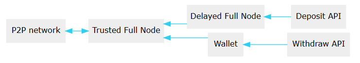

Exchanges, Bridges, and Gateways¶
Exchange, Bridges, and Gateways represent business that trade or
exchange assets that are located inside a Graphene network (e.g. BitShares)
against assets that are located outside the blockchain network. For
instance, exchanges trade BTS:BTC while bridges exchange bitBTC:BTC.
We here illustrate the steps necessary to securely operate as exchange or gateway. Gateways take Fiat and convert them to their corresponding bitAsset at a fee and vice versa. For instance:
- A customer requests 100 bitUSD from a gateway
- The gateway sends an invoice with bank account details
- When the funds arrive at the gateway a percentage is taken as a fee and the rest is transfered as bitUSD directly into the BitShares wallet of the customer.
For exchanges we recommend to also read what-is-different and Often used API Calls.
Integration Instructions
Table of Contents
Step-By-Step Instructions for Exchanges¶
We here describe how to interface your exchange with BitShares step-by-step. We will link to a more detailed description where appropriate.
1.Installation¶
In this step-by-step instruction we assume you have successfully built from the sources. If you’ve not done yet, see the instruction.
2. Running Daemons and Wallet¶
For security reasons we will run two daemons and a wallet according to these diagram:
{kind=link}
In this tutorial we will run all deamons and the wallet on the same machine and use different ports to distinguish them:
* port ``8090``: trusted full node
* port ``8091``: delayed node
* port ``8092``: wallet
Read more details Network and Wallet Configuration.
3. Trusted Full Node¶
The trusted full node is your entry point to the BitShares P2P network. It will hold the blockchain, connect to other peers, and will receive new blocks in real-time.:
./programs/witness_node/witness_node --data-dir=trusted_node/ --rpc-endpoint="127.0.0.1:8090"
Note
Until the genesis block is integrated into the binary/souces, you may additionally need to download the genesis block from github and add the parameter --genesis-json <genesis.json>.
Note
Unless the seed nodes are encoded into the binary, you may need to add a known seed node with -s xxx.xxx.xxx.xxx:yyy in order to initially connect to the P2P network. (See Release Page)
> Note: To start a node with reduced RAM please see Memory reduction for nodes.
Delayed Node¶
The delayed full node node will provide us with a delayed and several times confirmed and verified blockchain. All transactions that are confirmed by the delayed node are irreversible.:
./programs/witness_node/witness_node --trusted-node="127.0.0.1:8090" \
--rpc-endpoint="127.0.0.1:8091"
-s "0.0.0.0:0" \
--p2p-endpoint="0.0.0.0:0" \
--seed-nodes "[]"
We will use this node for notifications of customer deposits.
Query Blockchain for Required Data¶
We now use the open cli_wallet to issue transfers and query the blockchain for more information. First of all, we create a new wallet and set a pass phrase::
>>> set_password <password>
Existing BitShares 1 Account
We assume that you already have an account on the BitShares blockchain and show how to export it from the BitShares 1 client.
We first get the account statistics ID (2.6.*) of the deposit account to monitor deposits, the memo key for later decoding of memos and the active key for being able to spend funds of that accounts::
>>> get_account <account-name>
{
[...]
"active": {
"key_auths": [[
"<active_key>",
1
] ], },
[...]
"memo_key": "<memo_key>",
[...]
"statistics": "<statistics>",
[...]
}
We now need to export the corresponding private keys from BitShares 1.0 and import the keys into the cli_wallet::
BitShares 1: >>> wallet_dump_private_key <memo_key>
"<memo_private_key>"
BitShares 1: >>> wallet_dump_private_key <active_key>
"<active_private_key>"
Import the active key into BitShares 2 wallet::
BitShares 2: >>> import_key <account-name> <active_private_key>
This gives access to the funds stored in <account-name>. We will need the memo private key later when watching deposits.
Claiming BitShares 1.0 funds
We now describe how to claim your funds from the Bitshares 1 blockchain so you can use them in BitShares 2.
For Coldstorage and plain private keys, we recommend to use:
>>> import_balance <accountname> <private_key> false
to import all balances that are locked in the private key into the account named <accountname>. As long as the last argument is false the transaction will only be printed for audit and not be broadcasted or executed. Only after changing false to true will the balances be claimed!
For your hot wallet (or any other active wallet running in the BitShares 1 client) we recommend to use the GUI to claim your funds.
- Watching Deposits with Python
For watching deposits, we recommend pybitshares’ Notify module. The full documentation is available on pybitshares.com
- Executing Transfers for Withdrawals
For transfering funds, we recommend pybitshares. This python module enables all features required to operated on/with BitShares. The full documentation is available on pybitshares.com.